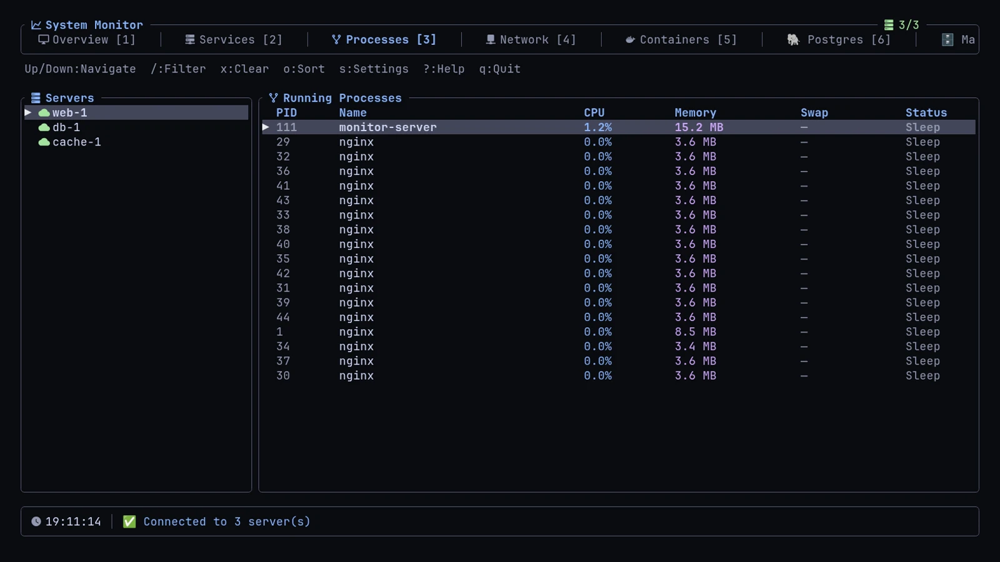
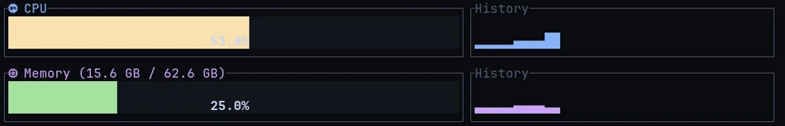

Sistema e pressão de memória
CPU, memória, swap e discos, e os travamentos por pressão do kernel (PSI): a lentidão que vem antes de a memória acabar.
Monitoramento de servidores · Código aberto
Um agente pequeno, em Rust, em cada servidor; um painel no terminal para todos eles; e verificações que dão nome ao problema: um banco exposto, um certificado prestes a vencer, uma unit que não para de falhar.
Linux, macOS e Windows · v0.2.0 · AGPL-3.0

O painel de verdade, conectado a três servidores de demonstração. Portas abertas em todas as interfaces aparecem em vermelho.
O que ele vigia
O agente coleta no servidor; o painel na sua máquina mostra a frota inteira em nove abas.
CPU, memória, swap e discos, e os travamentos por pressão do kernel (PSI): a lentidão que vem antes de a memória acabar.
Saúde no Docker, reinício em loop, container sem limite de memória e imagem trocada por trás da mesma tag.
Tamanho, conexões, sessões ociosas e configurações sobrescritas com ALTER SYSTEM.
Aviso 21 dias antes de vencer, crítico com 7, e a conferência de que a renovação está mesmo configurada.
Cada porta aberta com o seu processo, e banco de dados acessível de fora do servidor marcado como crítico.
/metrics no formato do Prometheus, /health e /ready. O histórico fica onde você já guarda.
Achados
Cada rodada de verificação gera achados com gravidade e alvo estável. O alerta aponta o culpado.
datastore_exposed uma porta de banco aceita conexões de foratls_certificate_expiring um certificado vence em 7 dias ou menosmemory_stalled processos esperando memóriacontainer_unhealthy um container não passa no health checksystemd_unit_failed uma unit falhouimage_drift a imagem por trás de uma tag mudou depois que o container subiu

Instalar
O instalador baixa do GitHub a versão mais recente para o seu sistema.
$ curl -sSL https://github.com/codigocentral/code-monitor/releases/latest/download/install.sh | sudo bash $ sudo monitor-server show-token # token para o painel
$ curl -sSL https://github.com/codigocentral/code-monitor/releases/latest/download/install.sh \ | sudo bash -s -- --component client $ monitor-client add --name web-1 --address 203.0.113.10 --token <token> $ monitor-client
No Windows, no PowerShell como Administrador: iwr https://github.com/codigocentral/code-monitor/releases/latest/download/install.ps1 -UseB | iex. O agente escuta na porta 50051; ligue o TLS na configuração e deixe-o numa rede privada ou VPN. Os binários de cada sistema estão na página de versões.
Planos
/metricsEntre na lista de espera: contato@codigocentral.com.br
Entre na lista de espera: contato@codigocentral.com.br
Comece hoje